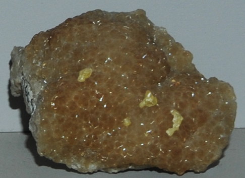

|

| C2H17O5Si46O92
This sample of melanophlogite is displayed in the Smithsonian Museum of Natural History. Melanophlogite is a oxide mineral with the composition C2H17O5Si46O92. The sample at left is about 8 cm across and is from Racalmuto, Agrigento, Sicilicia, Italy. It is described as melanophlogite with sulfur.
|